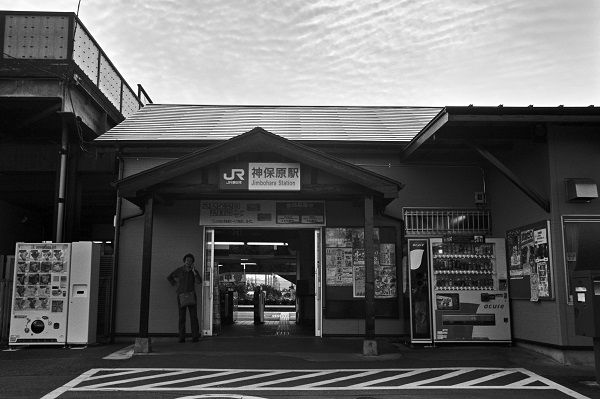

JR高崎・上越線21
神保坂駅 Zinbozaka
本庄駅
←← 高崎・上越線 →→
新町駅

2018/10 ﾍﾟﾝﾀｯｸｽLX M28mm ｱｸﾛｽ
2018/10 ﾍﾟﾝﾀｯｸｽLX M28mm ｱｸﾛｽ
2018/10 ﾍﾟﾝﾀｯｸｽLX M28mm ｱｸﾛｽ
2018/10 ﾍﾟﾝﾀｯｸｽLX M28mm ｱｸﾛｽ
2018/10 ﾍﾟﾝﾀｯｸｽLX M28mm ｱｸﾛｽ
2018/10 ﾍﾟﾝﾀｯｸｽLX M28mm ｱｸﾛｽ
戻る
ﾎｰﾑ